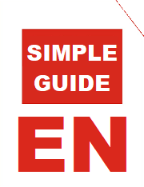
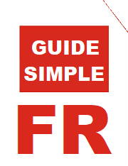
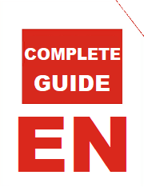

Welcome to the Bizon card game
Please select your language to start playing now:
English
Français
中文（繁體）
中文（简体）
If you want to quickly learn about the rules, please have a look at the following pdf files:

I also wrote a much more detailed version of the rules, with pictures included, in case there remains any questions:

 Welcome to the Bizon card game
Please select your language to start playing now:
If you want to quickly learn about the rules, please have a look at the following pdf files:
Welcome to the Bizon card game
Please select your language to start playing now:
If you want to quickly learn about the rules, please have a look at the following pdf files: